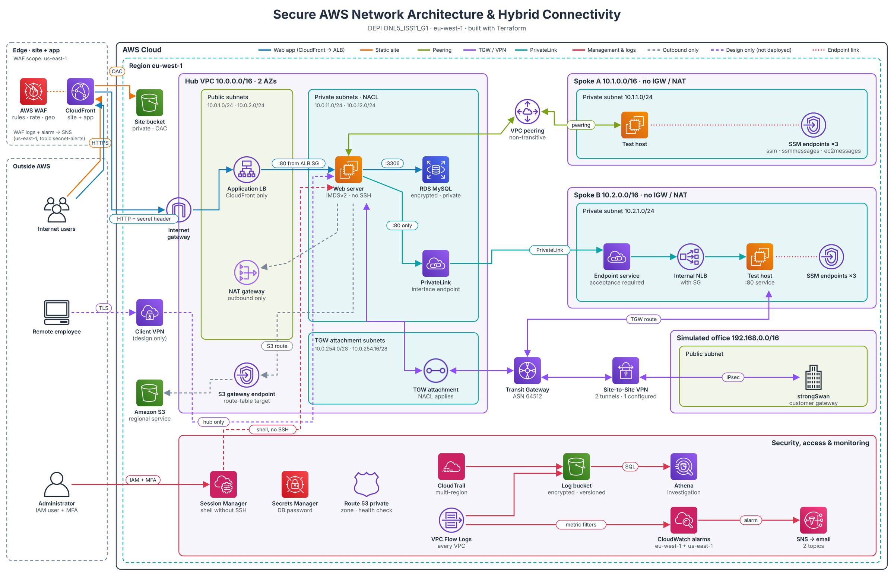
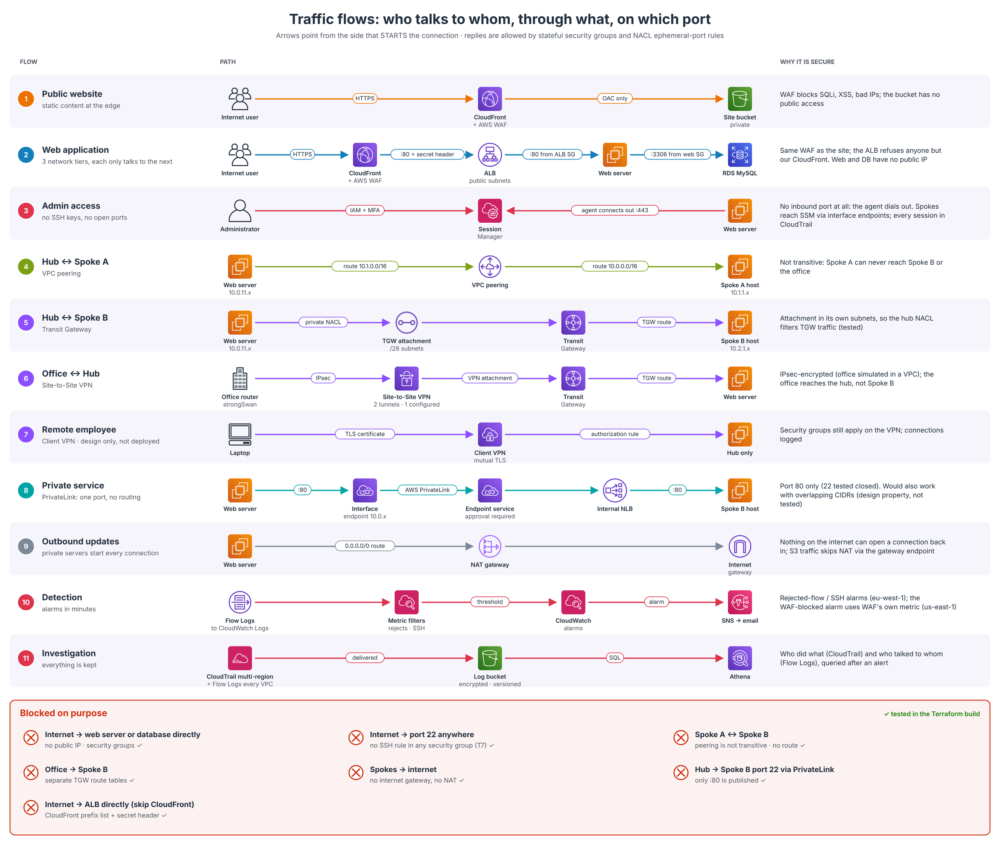

Why this project
Companies moving to the cloud need more than servers that work. They need a network that keeps attackers out, connects the office safely, and shows quickly when something goes wrong.
Keep attackers out
Nothing important has a public IP. The internet reaches the application only through the edge, and every tier only accepts traffic from the tier in front of it.
Connect safely
The office, other VPCs and private services connect over encrypted or private paths, with segmentation so one connection cannot be used to reach everything.
See and respond
Every API call and network flow is recorded. Alarms and threat detection email the team, and a runbook isolates a compromised server in minutes.
Repeatable and controlled
All infrastructure is code. Every change is planned, reviewed, approved and logged before it touches AWS.
How this page reaches you
This website is itself part of the demonstration: it is served by the same edge that protects the web application.
Opening the bucket directly returns 403 Forbidden. A SQL-injection or cross-site-scripting attempt against this page is blocked at the edge before it reaches the bucket.
Architecture
A hub VPC with three network tiers, two spoke VPCs, a simulated office connected over IPsec VPN, an edge layer in front, and a security and monitoring layer across everything.


What it does
Delivered in four stages. Each stage adds capabilities on top of the previous one.
Hub VPC and 3-tier network
- Public, private and isolated data subnets across 2 Availability Zones
- Load balancer → web server → MySQL database, each tier locked to the previous one
- Admin shell through Session Manager: no SSH keys, no open ports
- CloudTrail, VPC Flow Logs and a monthly budget alert
Office, spokes and private services
- Site-to-Site IPsec VPN from a simulated office
- Transit Gateway with separate route tables for segmentation
- VPC peering (and proof that it is not transitive)
- PrivateLink: one service on one port, no routing between networks
- VPC endpoints so private servers need no internet
CloudFront, WAF and DNS
- CloudFront in front of both this site and the web application
- AWS WAF: managed rule sets, rate limiting, geo-blocking, alarms
- The load balancer accepts only CloudFront, so the edge cannot be bypassed
- Private DNS zone and an end-to-end health check
Know quickly, act quickly
- GuardDuty threat detection and Security Hub best-practice checks
- AWS Config rules that re-check security groups on every change
- DNS Firewall blocking malware and botnet domains
- Recorded admin sessions, Athena investigations, isolation runbook
Defence in depth
An attacker has to defeat several independent layers. Each one is enforced by AWS, not by convention.
| Layer | Controls |
|---|---|
| Edge | CloudFront (HTTPS), AWS WAF, AWS Shield Standard, load balancer reachable from CloudFront only |
| Network | Security groups chained tier to tier, network ACLs, Transit Gateway segmentation, isolated database subnets, no public IPs on servers |
| Egress | Outbound through NAT only, DNS Firewall against known-bad domains, S3 through a gateway endpoint |
| Host | IMDSv2 only, no SSH, Session Manager with every session recorded |
| Data | Encryption at rest (RDS, S3) and in transit (S3 refuses plain HTTP, MySQL requires TLS), database password in Secrets Manager |
| Identity | MFA, least-privilege instance roles, IAM Access Analyzer |
| Detection | CloudTrail (all Regions), VPC Flow Logs (every VPC), CloudWatch alarms, GuardDuty, AWS Config, Security Hub |
| Response | Email alerts through SNS, Athena queries for investigation, one-switch isolation of a compromised server |
Proof, not promises
Every claim on this page is checked by an automated test suite that runs against the live environment and explains each test in plain words.
| Example test | Expected | Result |
|---|---|---|
| Open the database port from the internet | Blocked | Pass |
| Go straight to the load balancer, skipping CloudFront | No answer | Pass |
| Send a SQL-injection attack to the web application | 403 from WAF | Pass |
| Flood the site with 300 requests from one address | Rate limit starts blocking | Pass |
| Reach the second spoke through the peered spoke | No route (peering is not transitive) | Pass |
| Reach a restricted spoke from the office VPN | No route (segmentation) | Pass |
| Block visitors from a country (live drill) | 403, then 200 after revert | Pass |
| Stage 4 layers (GuardDuty, Config, DNS Firewall, TLS, isolated data tier) | Each layer verified | Being added |
How we work
Infrastructure as code
Terraform modules for the network, compute, connectivity, edge and monitoring, with state stored in an encrypted, versioned S3 bucket.
Change control
No change without a reviewed plan, an explicit approval and an entry in the change log. Drills that change something are reverted and logged too.
Cost control
Expensive parts sit behind switches. One command puts the environment to sleep overnight while monitoring and audit logs stay on.
Evidence
Every test and drill is captured as evidence, with public IPs and secrets removed before anything is stored.
Production next steps
Lab trade-offs we made on purpose, and what a production deployment would add.
| Lab choice | Production design |
|---|---|
| One NAT gateway, one web server, single-AZ database | NAT per Availability Zone, Auto Scaling across 2 AZs, RDS Multi-AZ |
| One VPN tunnel configured | Both tunnels, ideally two customer gateways |
| CloudFront to load balancer over HTTP | Certificate on the load balancer, or CloudFront VPC origins with an internal load balancer |
| Security groups and NACLs for inspection | AWS Network Firewall in a central inspection VPC |
| Logs in the same account | Separate log-archive account with S3 Object Lock |
| IAM user with MFA | IAM Identity Center with short-lived credentials |
| Office cannot resolve private DNS names | Route 53 Resolver inbound and outbound endpoints |